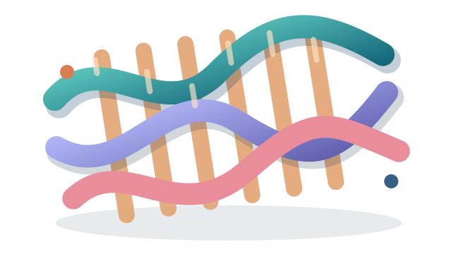
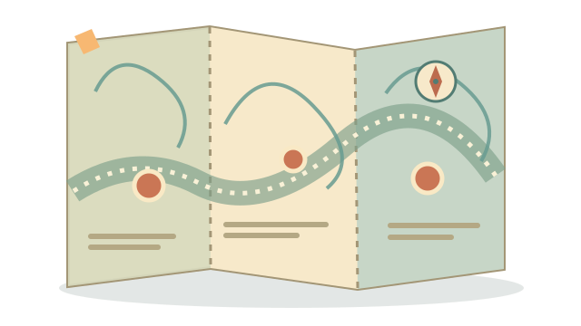

Observe
Identify content hierarchy before choosing a visual language.
6 份可单独抽取的原创 CSS/HTML 内容编排原件 + 4 份可直接引用的原创 SVG。它们仅是素材与结构参考，不包含业务数据、图片库、后端或完整页面生成器。
Offset media and oversized typography for a calm introductory composition.
Identify content hierarchy before choosing a visual language.
Use asymmetric spacing to carry attention across a sequence.
Keep DOM order and the mobile fallback predictable.
Use clear constraints and consistent hierarchy for focused decisions.
Introduce expressive rhythm where discovery and storytelling matter.
Start with meaningful inputs.
Surface useful differences.
Choose a readable rhythm.
Validate in the real context.


Each SVG is a distinct editable 640×360 vector. Reuse only the chosen source, provide meaningful alt text or empty alt for decoration. All colors/data are illustrative; external images, fonts and services are not needed.